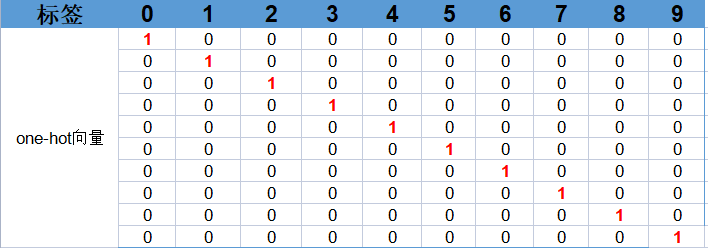

在 多层感知机（MLP）解析 一文当中，我们详细地介绍了什么MLP模型的框架模型，此外我们还提到了一个重要的函数——torch中的nn.CrossEntropyLoss() 。这个就是在分类问题中经常用的损失函数——交叉熵损失。在介绍交叉熵损失之前，我们先补充一些基本知识。
Softmax函数
Softmax 函数是一种将向量映射为概率分布的函数，常用于分类任务中。它将一个 维的向量 作为输入。softmax 函数的计算方式如下：
其中， 表示向量 的第 个元素， 表示向量 的维度。softmax 函数将向量 中的每个元素 进行指数运算，然后将所有指数的和作为分母，每个指数除以分母作为分子，即可得到每个元素的 softmax 值，即
我们再重新看一下这个MLP模型。其输出层中的每一个输出神经元都有一个输出值。softmax函数会把每一个输出值压缩到0到1的区间，并使得所有的被压缩后的的值之和等于 1，即式（2）所示。softmax 函数的输出可以被解释为一个概率分布，其中每个元素的值表示该元素对应类别的概率。在分类任务中，通常将 softmax 函数的输出作为模型的预测概率分布。

one-hot编码
one-hot 编码是一种将离散变量表示为向量的方法，常用于机器学习和深度学习中。但是我们不能直接把这种离散的标签用于训练，而是首先需要这些离散的标签转为向量。怎么转换呢？我们知道手写数字一共有10个类别（标签），如下表中的第一行所示。在 one-hot 编码中，每个离散的标签需要被转换为一个向量，向量的长度为类别的个数，我们有10个类别，所以向量的长度为10。并且每个向量中中仅有一个元素为 1，其余元素为 0，这个元素为1的位置对应于该标签的序号；比如标签为2排在第3位，那么其对应的one-hot 向量 为 0010000000，依次类推就可以得到其他标签所对应的one-hot向量。 
负对数似然损失（negative log-likelihood loss, NLL loss）
NLL loss以用于衡量模型输出的概率分布与真实标签之间的差异。假设有 个类别，模型输出的概率分布为 ，其中 表示输入样本属于第 个类别的概率，真实标签所对应的one-hot向量 。则多分类问题中的NLL loss可以被定义为 NLL loss的物理意义是，模型预测向量 和真实标签所对应的向量 越相近，损失函数的值越小，表示模型的预测结果越接近真实标签。
现在让我们用一个具体的实例来看一下NLL loss是怎么计算的。比方说，当前我喂给MLP模型一个手写数字为3的样本，那么其对应的标签 就是，然后这个MLP模型的输出经过softmax变换后所得到的向量为 ，假设此时 为，然后就可计算出 取了log后的值，从而就可以计算出MLP模型在这个样本上的NLL损失为0.4194。 表示矩阵的逐元素相乘(elemetwise multiplication)。这就是NLL loss 的计算，NLL loss的值越小，说明模型的预测结果越接近真实标签。
交叉熵损失
交叉熵损失（Cross Entropy Loss）是一种广泛用于分类问题的损失函数，它的主要思想是通过比较模型的预测值与真实标签之间的差异，来度量模型的性能。在分类问题中，交叉熵损失通常用于衡量模型的输出与真实标签之间的差异。它的计算方式如下：
-
首先，将模型的输出通过 softmax 函数转化为一个概率分布，即所有类别的概率之 和为 1。
-
然后，将真实标签转为one-hot编码。
-
最后，计算模型输出的概率分布与真实标签的 one-hot 编码的NLL loss。这个loss值可以用来度量模型输出与真实标签的差异，即模型预测值与真实标签之间的距离。
这样我们就获得了交叉熵的loss，然后就可以根据这个loss用于模型参数的训练更新。